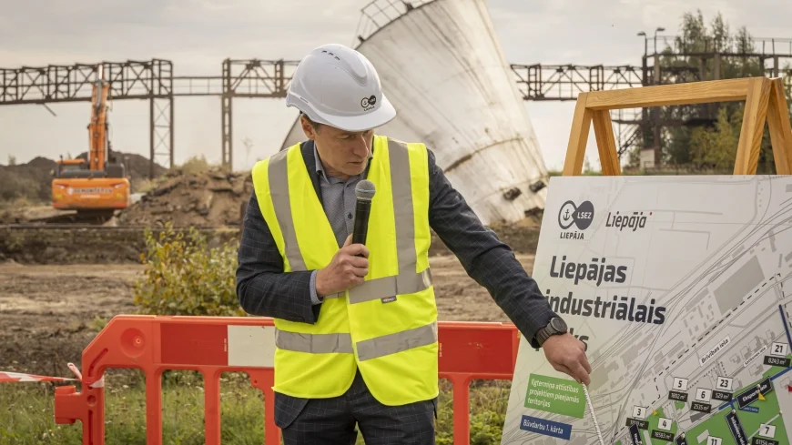

Kontaktpersona

Līga Ratniece-Kadeģe
Komunikācijas un korporatīvās pārvaldības speciāliste
Tālr: (+371) 29233446 E-pasts: liga.ratniece-kadege@lsez.lv
Ar teritorijas sanāciju turpina Liepājas industriālā parka izbūvi
Liepājas SEZ pārvalde turpina bijušās rūpnīcas “Liepājas metalurgs” teritorijas transformāciju, īstenojot projektu “Liepājas industriālā parka teritorijas attīstība 2. kārta”. Projekta ietvaros tiek sakārtota un sanēta vēsturiski piesārņota rūpnieciskā teritorija, izbūvējot mūsdienīgu uzņēmējdarbībai nepieciešamo infrastruktūru. Projekts tiek īstenots Eiropas Savienības Kohēzijas politikas programmas 2021.-2027. gadam ietvaros, sekmējot pāreju uz klimatneitrālu ekonomiku un mazinot ar šo pāreju saistītās sociālekonomiskās sekas Kurzemes reģionā.
Liepājas SEZ pārvaldnieks Uldis Hmieļevskis norāda, ka attīstības mērķis ir bijušās AS "Liepājas metalurgs" teritoriju pārvērst par mūsdienīgu industriālo parku, radot vietu jaunām uzņēmējdarbības iniciatīvām. Liepājas uzņēmumi aug un attīstās, tāpēc tiem nepieciešamas jaunas teritorijas ražošanas un loģistikas projektu īstenošanai. Industriālais parks nodrošinās vietu uzņēmumu izaugsmei un veicinās jaunu investīciju ienākšanu Liepājā. Uldis Hmieļevskis uzsver, ka īpašs prieks, ka Liepājas industriālo parku kā vietu savai rūpnīcai saredz vietējā kapitāla uzņēmumi.
Projekta ietvaros demontēs deviņas mazuta cisternas ar kopējo ietilpību 60 000 kubikmetru, kā arī veiks grunts un gruntsūdeņu sanāciju Eksporta ielas izbūves zonā. Attīrītajā teritorijā izbūvēs mūsdienīgas inženierkomunikācijas, tostarp siltumapgādes, ūdensapgādes, sadzīves un lietus kanalizācijas tīklus, kā arī savienos Eksporta un Čuguna ielas vienotā satiksmes tīklā.
Būvdarbus veic SIA “A-Land”, ar kuru 2026. gada 28. augustā noslēgts līgums par 3,88 miljoniem eiro bez PVN. Kā norāda SIA “A-Land” būvdarbu vadītājs Dainis Kopštāls, uzņēmumam tas ir zināms izaicinājums īstenot projektu, kurā pirms inženierkomunikāciju un ielas posma izbūves jāveic teritorijas sanācija. “Veiksmīgā projekta plānošana no pasūtīja puses, un sadarbības partneru profesionalitāte ļauj virzīties uz priekšu saskaņā ar laika grafiku.” Būvuzraudzību nodrošina SIA “Firma L4”, autoruzraudzību veic SIA “BM – Projekts”, savukārt vides konsultācijas sniedz SIA “Ameco”.
Viens no redzamākajiem projekta elementiem būs jaunais apļveida krustojums Eksporta un Čuguna ielā. Godinot teritorijas industriālo mantojumu, tā centrā tiks izvietoti vēsturiskie sārņu ratiņi, simboliski savienojot “Liepājas metalurga” vēsturi ar teritorijas jauno attīstības posmu.
Liepājas Industriālais parks, kur “ģenētiskajā kodā” ir ielikta ilgtspējīga domāšana, skaidri nosakot izglītības, inovāciju un aprites ekonomikas pamatprincipus. Bijušās rūpnīcas “Liepājas metalurgs” teritorija pakāpeniski tiek atgriezta pilsētas apritē, padarot to pieejamu sabiedrībai un pievilcīgu investoriem.
Liepājas industriālo parku attīsta Liepājas SEZ pārvalde un Liepājas valstspilsētas pašvaldība, kopā ar sadarbības partneriem SIA “Liepājas ūdens” un SIA “Liepājas enerģija” bijušās rūpnīcas “Liepājas metalurgs” teritorijā starp Brīvības ielu, Meldru ielu, Ezermalas ielu, Parka ielu un Zemnieku ielu. Tas robežojas ar Liepājas ezeru, kas ir īpaši aizsargājama dabas teritorija “NATURA 2000”. Saskaņā ar apstiprināto attīstības stratēģiju plānots piesaistīt privātās investīcijas vairāk nekā 275 milj. EUR apmērā un radīt vismaz 1500 jaunu darba vietu.
Žurnāls Real FDI izcēlis 10 perspektīvākos industriālos un loģistikas investīciju projektus pasaulē un kā viens no tiem minējis Liepājas Industriālo parku. Mūsdienu konkurencē investīcijām pievilcīgākas ir vietas, kuras spēj piedāvāt ne tikai zemi, bet arī modernu infrastruktūru, enerģētisko drošību, loģistikas savienojumus un modernai ražošanai piemērotu ekosistēmu. Projekti atrodas dažādās valstīs un demonstrē dažādus attīstības modeļus: no lieliem industriāliem centriem Vācijā un Spānijā līdz jauniem loģistikas mezgliem Islandē, Rumānijā, Latvijā, Apvienotajā Karalistē un Meksikā.
Uzziņai:
- 2018. gadā starp Ekonomikas ministriju, Latvijas investīciju un attīstības aģentūru, SIA «FeLM», Liepājas valstspilsētas domi un Liepājas speciālās ekonomiskās zonas pārvaldi noslēgts nodomu protokols par bijušās rūpnīcas “Liepājas metalurgs” teritorijas attīstību.
- 2019. gadā uzsāk nekustamo īpašumu konsolidāciju bijušās rūpnīcas Liepājas metalurgs teritorijā
- 2021. gadā apstiprināja bijušās rūpnīcas “Liepājas metalurgs” teritorijas attīstības programma un noslēgta starpresoru vienošanās ar Liepājas valstspilsētas domi par tās īstenošanu.
- 2022. gadā apstiprināts bijušās rūpnīcas “Liepājas metalurgs” teritorijas lokālplānojums.
- 2022. gadā izstrādāta bijušās rūpnīcas “Liepājas metalurgs” teritorijas sanācijas darbu programma.
- 2023. gadā apstiprināta “Liepājas Industriālā parka” (LIP) attīstības stratēģija 2023. -2028. gadam.
- 2023. gadā izstrādāti vairāki būvprojekti teritorijas infrastruktūras attīstības būvdarbu veikšanai.
- 2023. gadā sagatavots un iesniegts projekta iesniegums pirmajiem ielu izbūves darbiem LIP teritorijā un saņemts Centrālās finanšu un līgumu aģentūras atzinums par finansējuma piešķiršanu šiem darbiem.
- 2023. gadā noslēgts nomas līgums ar SIA “Liepājas Steel” līdz 2025. gada 31. decembrim par elektriskās tēraudkausēšanas krāsns demontāžu un izvešanu.
- 2024. gada rudenī uzsāk pirmo ielu posmu un inženierkomunikāciju izbūvi un visas teritorijas elektrifikāciju.
- 2025. gadā uzsāk esošo industriālo ēku atsavināšanu.
- 2025. gada nogalē ekspluatācijā nodeva un atvēra publiskai piekļuvei ielu posmus – Inženieru, Eksporta, Dzelzgriezēja un Naglu ielās ar inženierkomunikācijām (ūdensapgāde, sadzīves kanalizācija, lietus ūdens kanalizācija, siltumapgādes tīkli). Tāpat projekta ietvaros plašajā teritorijā izbūvēja elektroapgādes tīklus 3865 m garumā un 8 jaunus transformatorus.
- 2026. gadā izbūvēja krustojumu un ceļu starp Brīvības ielu, Čuguna ielu un Eksporta ielu, bet par ietaupīto finansējumu papildus izbūvēja 289 m garu ielas posmu Martena ielā.
- 2026. gada septembrī uzsāk Centrālās finanšu un līgumu aģentūras apstiprinātu projektu “Liepājas industriālā parka teritorijas attīstība 2.kārta”, kura ietvaros tiek demontēta mazuta saimniecība, veikta teritorijas sanācija un izbūvēti ielu posmi, kas savieno Eksporta ielu un Čuguna ielu vienotā ielu tīklā.
